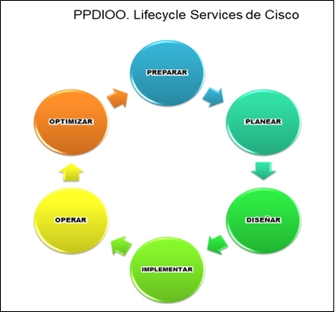

Preparación: En esta fase, se establecen los requisitos organizacionales, se
desarrolla una estrategia de red y se propone una arquitectura de alto nivel. También se
identifican las tecnologías que mejor pueden sustentar la arquitectura.
Planeación: Aquí se identifican los requisitos de la red en función de los objetivos,
la ubicación y los servicios necesarios. El plan del proyecto ayuda a administrar tareas,
responsabilidades y recursos para implementar los cambios en la red.
Diseño: Los operadores diseñan la red según los requisitos iniciales, incorporando
información adicional recopilada durante el análisis y la auditoría de la red. Esto incluye
discusiones con administradores y usuarios.
Implementación: Comienza después de que el diseño es aprobado. Se construye la red y
se integran componentes adicionales según las especificaciones de diseño, sin interrumpir la
red existente.
Operación: Se prueba la adecuación del diseño y se mantiene el estado de la red en
las operaciones diarias. Esto incluye detectar y corregir fallas, supervisar el rendimiento
y mantener alta disponibilidad.
Optimización: En esta fase, se administra proactivamente la red para identificar y
resolver problemas antes de que afecten a la organización.

Figura N° 5. Metodología PPDIOO